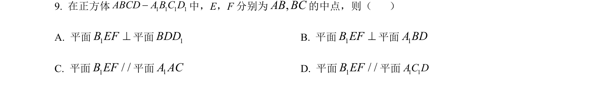
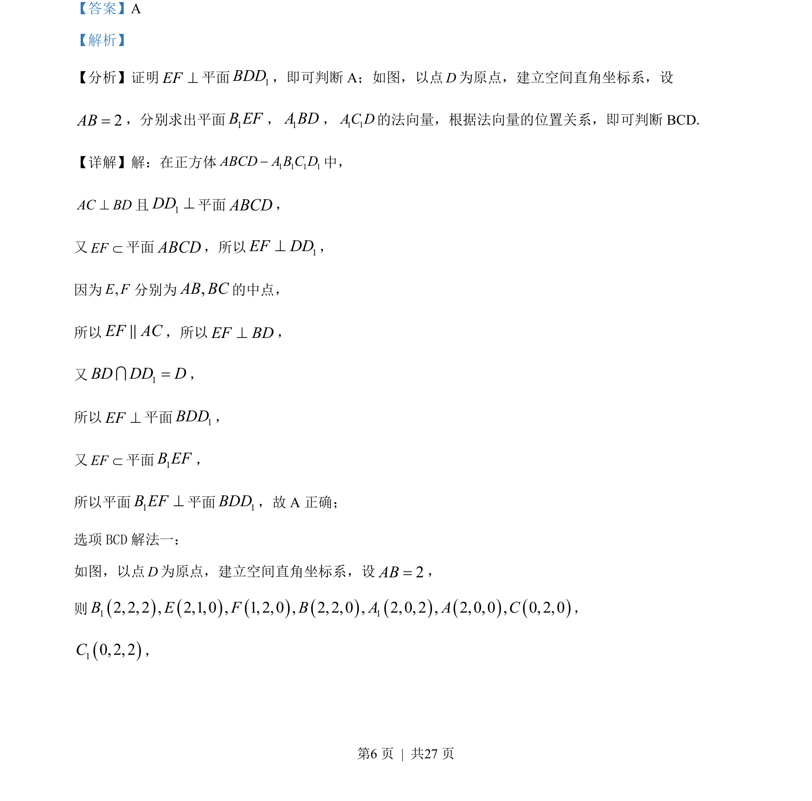
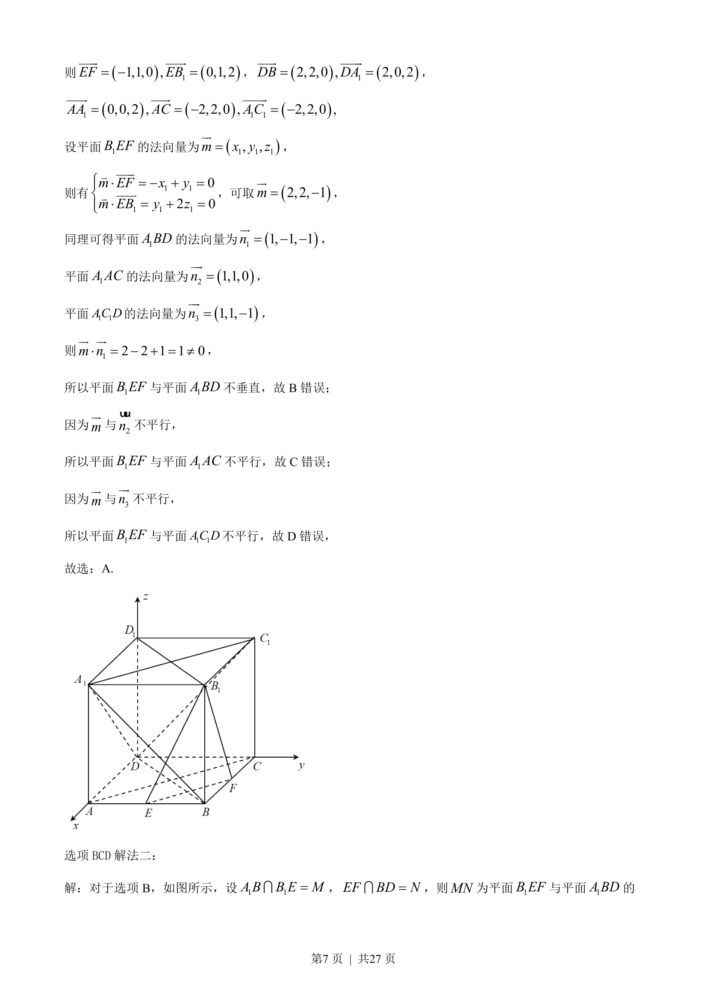
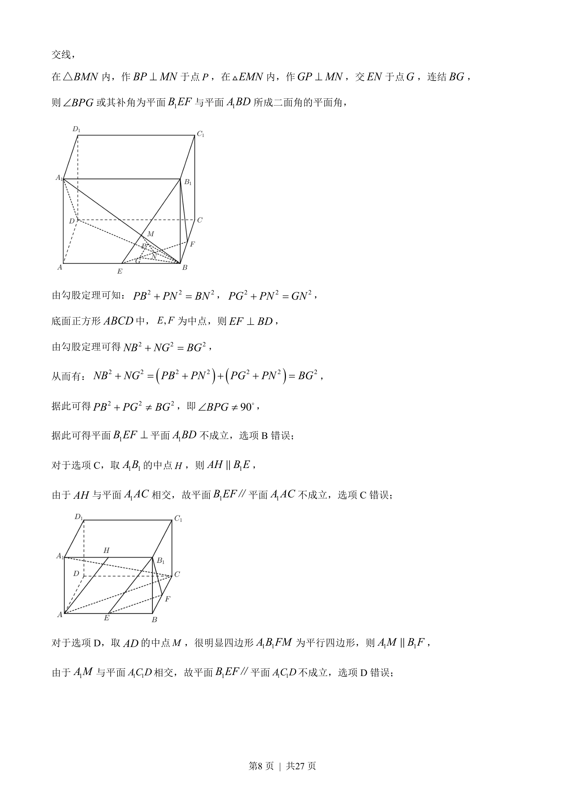
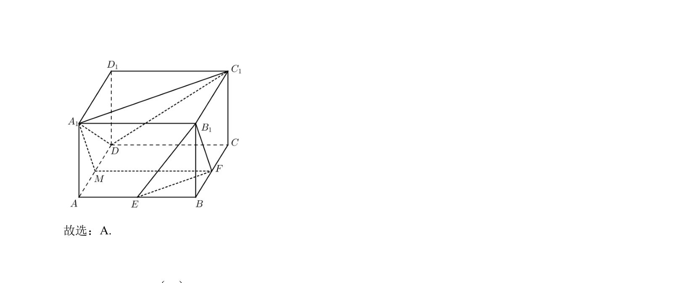

考点：立体几何 线面平行 面面垂直 面面平行

正方体ABCD-A₁B₁C₁D₁中E、F分别为AB、BC中点，判断平面B₁EF与各平面的垂直或平行关系。




📄 原 PDF 第 6 页：
素材/真题/吉林/2008-2024·（吉林）数学高考真题/2022年高考数学试卷（文）（全国乙卷）（解析卷）.pdf
【答案】A 【解析】 【分析】证明EF^平面1BDD，即可判断 A；如图，以点D为原点，建立空间直角坐标系，设 2AB=，分别求出平面1B EF，1A BD，1 1AC D的法向量，根据法向量的位置关系，即可判断 BCD. 【详解】解：在正方体 1 1 1 1ABCD A B C D-中， AC BD^且1DD^平面ABCD， 又EFÌ平面ABCD，所以 1EF DD^， 因为,E F分别为,AB BC的中点， 所以EF ACP，所以EF BD^， 又 1BD DD D=I， 所以EF^平面1BDD， 又EFÌ平面1B EF， 所以平面1B EF^平面1BDD，故 A 正确； 选项BCD解法一： 如图，以点D为原点，建立空间直角坐标系，设2AB=， 则1 12, 2, 2 , 2,1,0 , 1, 2,0 , 2, 2,0 , 2,0, 2 , 2,0,0 , 0, 2,0B E F B A A C， 10, 2, 2C，